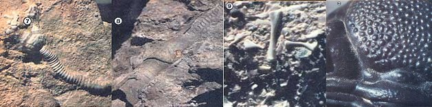

Fossil Hunting
July/August 1980
I'm the sort of person who seldom leaves a stone unturned . . . because I've found that rocks contain a great deal of history as well as profit potential in the form of valuable fossils.
In the creek bed near my house, for example, I've discovered sandwiched between layers of gray shale hundreds of specimens of a certain species of trilobite ( Ampyxina bellatula ). Many of the preserved creatures now grace shelves in my home . . . and I've sold my extras to dealers, for $5.00 each!
WHAT TO LOOK FOR
Fossils can be the petrified remains or impressions of entire animals or of their bony parts, skin, feathers, or tracks . . . in short, the term is used to describe almost all bits of evidence that indicate the presence or passing of creatures long ago. Among the most interesting (and most valuable to collectors and museums) of such preserved beasts are the trilobites, which ruled the oceans some 500 million years back, and ranged in size from less than an inch in length to 18 inches or more. Though such life forms haven't been around for about 230 million years, their fossilized remains are commonly found all over the country . . . often exquisitely preserved and showing all their original detail.
Trilobites are not, of course, the only fossil "game in town". A local rock shop owner pays me $4.00 each for preserved segments of a straight cephalopod a shelled forefather of the squid and octopus that lived in Missouri some 400 million years ago. Another large and perfect cephalopod specimen (which is worth several hundred dollars) takes up three feet of floor space in my study.
WHERE TO LOOK
Fossils can be found almost everywhere. Each hillside, quarry, road cut, outcrop, and stream bed is a potential "mine". Even the rocks in your field or garden may contain some of the time travelers. Certainly, though, the more you know about fossils and the geological formations in which they're likely to be located, the more specimens you'll be able to find.
The best" hunting ground" is sedimentary rock that was laid down under a prehistoric body of water and is characteristically (and usually recognizably) layered. Many of the organisms that lived in the lake, pond, or sea will be preserved within the solidified sediment . . . particularly if they had hard parts such as shells, carapaces, or bones. The creatures will have "survived" the millions of years since their deaths as impressions (molds or casts), or will perhaps have been partially or wholly replaced by dissolved minerals. Since organic matter often disintegrates very slowly, such replacement can sometimes create an exact replica in stone . . . even down to the animal or plant's cellular level. Occasionally (though rarely), some of the ancient life form's original organic matter may survive as well.
The fortunate fossil forager will find his specimens "weathered out" on the exterior of rocks. More often, however, it will be necessary to split the strata in your search (but there's certainly no need to dig ugly holes in the landscape in order to make finds). Securely embedded specimens should, of course, be extracted with care, but since erosion would eventually wear away the unprotected mineralized organisms, anyway prospective hunters shouldn't feel guilty about collecting and preserving them, if they do the job properly and with a minimum of disruption.
Remember, too, that fossils are usually near (if not within) what was once the creatures' natural habitat, and-since ecological communities always support a variety of life the discovery of one preserved organism will suggest the presence of others.
You may find the identification of different species difficult at first, but the search for knowledge in this area is actually a great part of the pleasure of collecting fossils. To educate yourself, however, it's necessary to keep an exact record of where and at what depth each individual specimen is found. (See the accompanying sidebar for identification sources and markets for your finds.)
TOP TREASURES
The following are the most popular and therefore the most valuable fossils among the commonly found varieties.
TRILOBITES look like fat insects and are commonly one to four inches in length. There are variations on the basic model, but if you have a clear mental picture of one type of trilobite, you'll recognize them all. The heads (cephalons), segmented middles (thoraxes), and tails (pygidia) are often found separately, since the creatures shed their shells to accommodate growth just as do crustaceans (crabs and lobsters, etc.) today. Usually, however, only whole specimens are prized . . . and species, size, rarity, and the state of preservation will dictate a fossil's value. (The "take" can be as little as the $3.00 to $5.00 that my relatively common Ampyxina will bring . . . or as much as the $300 recently offered a friend of mine for a perfect four-inch Isotelus. )
CEPHALOPODS have large, cylindrical shells that are either straight or coiled. (In the latter types, the coil is flat and is, therefore, distinguishable from those of the more common snail fossils . . . which tend to be somewhat spiral.) Cephalopods (a group which includes ammonites, nautiloids, and straight cephalopods) often have delicately ornate markings and ridges, and are among the most spectacular of ancient creatures. Their shells can range from a few inches to several feet in diameter or length. In life, these members of the mollusk family sported tentacles. They reached their zenith at the time of the dinosaurs, and very few species still survive.
CRINOIDS are flower-like sea animals that have stems, heads, and arms. Stem sections are extremely common and virtually valueless to the collector . . . but an intact, whole crinoid (I found one last week in a roadc-ut) will bring $80 or more. Occasionally, when found on a slab in groups, they are all but priceless.
SHELLS of various kinds are very common and, as a result, are difficult to sell. Some dealers will pay a little for groups of 100 or more, but the effort of collecting so many separate specimens is hardly worth the return. Such mundane fossils are, however, indicators of ancient marine communities which may also have supported trilobites, cephalopods, and crinoids . . . and some of the larger brachiopod shells are worth adding to your own collection simply for their beauty.
Other fossils which are common only in specific locations around the country may include fish skeletons, insects, animal and bird tracks, leaves, petrified wood, sharks' teeth . . . and even reptile remains, although collecting the latter "finds" is a process best left to professional paleontologists (such valuable relics are too easily damaged to be safely handled by amateurs).
FROM PASTIME TO AVOCATION
The more exotic fossils, of course, are especially difficult to locate, but they're around. As ( and if) you progress from the casual overturning of rocks to a strong desire for more specific knowledge, your state's geological survey can provide maps and data on the age and identification of the native sedimentary strata. (Some such agencies will even offer information on actual collecting areas and the types of fossils likely to be found there.
Local rock shops (they'll be listed in the Yellow Pages) are also good sources of information, as are the somewhat rare experienced collectors who don't mind revealing their own hunting sites. Such people will often buy specimens, too, as well as aid you in learning identification and methods of cleaning and matrix (or surrounding rock) removal. (Though most of the fossils you'll find will be sufficiently exposed by natural erosion, the techniques for any necessary cleaning are best learned locally, because rock types and appropriate cleansing methods vary from place to place.)
As a pricing guide, I use the Geological Enterprises catalog, which can be ordered for $3.00 from Dept. TMEN, Box 998, Ardmore, Oklahoma 73401. For fossils that will be resold, I quote half the price listed for similar specimens. When selling to collectors, though, I try not always successfully to get the full price.
Before embarking on any substantial hunting expedition, it's worth your while to check local laws. A few states prohibit fossil collecting on some if not all public property. (Utah, for example, does so.) It's always a good idea, too, to ask permission from local landowners before trespassing on their turf.
Then, as you gather your rock-bound treasures, keep in mind that fossil hunting by careful and aware amateur paleontologists has made significant contri butions to our total knowledge of archaic life forms and the geological history which they record. On a more personal level, my profitable hobby adds a whole j new perspective to my life . . . because each fossil that I find gives me access to a moment of almost inconceivable antiquity, which in turn leads to thoughts about time, space, the universe, and my own peculiar place in the scheme of things. I know of no other way of being quite so overwhelmed.
RESOURCES FOR FOSSIL HUNTERS
IDENTIFICATION SOURCES
Index Fossils of North America by Harvey W. Shimer and Robert R. Shrock (M.I.T. Press, $45). This ultimate reference is available in most libraries.
Local natural history and geological museums.
University geology departments.
Rock shops (locally listed in the Yellow Pages under "Rocks for Collectors", and nationally listed in the annual April issue of The Lapidary Journal, which can be purchased in most rock shops or found in your library).
Your state's geological surveys.
Local collectors.
DEALERS
Geological Enterprises, Dept.
TMEN, Box 996, Ardmore, Oklahoma 73401 (all types of fossils).
Malicks' Fossils, Inc., Dept. TMEN, 5514 Plymouth Road, Baltimore, Maryland 21214 (for all types of fossils).
Mid-America Rock Shop, Dept. TMEN, 6928 North Clark Street, Chicago, Illinois 60626 (all types of fossils).
Russell's Fossils, Dept. TMEN, P.O. Box 593, Barre, Massachusetts 01005 (all types of fossils).
Ward's Natural Science Establishment, Dept. TMEN, P.O. Box 1712, Rochester, New York 14603.
Beaver-Hood Co., Dept. TMEN, P.O. Box 177, Prineville, Oregon 97754 (fossil plant materials only).
A source for new dealers, as well as rock shops around the country, is (again) the annual April issue of The Lapidary Journal . The classified lists in this magazine are comprehensive and well organized.
Additional markets for your prehistoric wares may be found by visiting rock dealers, collectors, museum shops, rock shows . . . and some de partment stores. Another approach you could take for peddling the fossil finds would be to run an ad in The Lapidary Journal or another similar magazine. And ultimately, of course, you could even set up your own shop.
EDITOR'S NOTE: An excellent beginner's book on rock indentification, tools, map study, and fossil protection-which also lists the best fossil areas state by state-is The Weekend Fossil Hunter by Jerry C. LaPlante, Drake Publishers, Inc., $5.95.
 [1] Usually, only whole specimens of trilobites, such as this well-preserved Elrathia, are prized by collectors. [2] The author has found hundreds of fossils-in a creek bed near his home. [3] The flat coil of this cephalopod distinguishes it from the more common spiraled snail fossils. |
[4] This coprolite, a piece of fossilized excrement, can teach us much about prehistoric animals. [5] Ancient fish looked very much like their modern counterparts. [6] Leaves in stone, such as this one, tell us that oak trees have flourished for millions of years. |
 [7] An intact flowerlike crinoid-a sea animal with a stem, head, and arms?will bring 880 or more from a collector, and if you're lucky enough to find a whole group of crinoids on a slab, the rock will be almost priceless! (8J This once-living creature?now a rare fossil?is known as a straight cephalopod, a member of a group that reached its zenith in the time of the dinosaurs and included some of the most spectacular of ancient creatures. [9] Many millions of years ago?around the time the Appalachians were formed?these bones turned to stone. They were recently unearthed by our fossil-hunting author. [10] This monsterlike, perfectly preserved trilobite head looks like a prehistoric creature . . . which, of course, is just what it is! |